Frequenzbetrieb Plugin Organizer
Alle deine Plugins mit echtem Bild – sortiert, durchsuchbar und mit einem Klick oder einer Taste direkt in Ableton Live geladen. Kostenlos und Open Source von Frequenzbetrieb n.e.V.
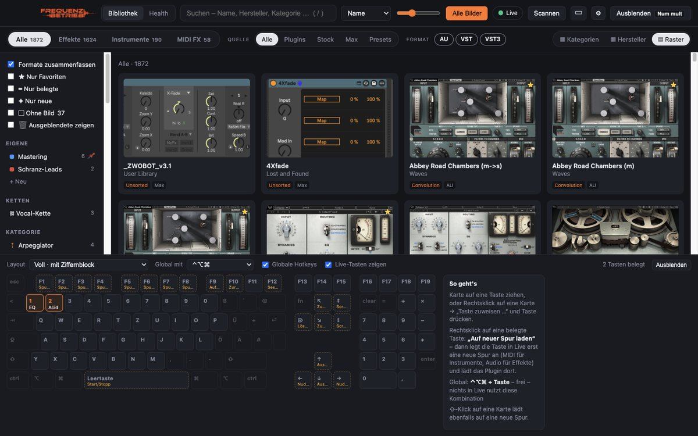
Erste Schritte
- App starten. Beim ersten Start sucht der Organizer alle Plugins (AU, VST, VST3, AAX, CLAP), Lives Stock-Devices, Max-for-Live-Devices sowie Racks und Presets zusammen.
- Berechtigungen erlauben (Mac): Bedienungshilfen – damit der Organizer Live steuern darf – und Bildschirmaufnahme – für Fotos direkt aus Live. Beides unter Systemeinstellungen → Datenschutz & Sicherheit.
- Live-Skript aktivieren (empfohlen) – siehe Live-Skript einrichten. Danach lädt der Organizer in Sekundenbruchteilen.
- Bilder aufnehmen: Live mit einem leeren Set öffnen und oben auf Alle Bilder klicken – siehe Bilder für alle Plugins.
Das Hauptfenster
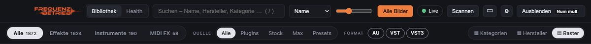
- Bibliothek / Health – zwischen deinen Plugins und dem Health-Bereich umschalten.
- Suche – nach Name, Hersteller oder Kategorie. Mit / springst du ins Suchfeld.
- Sortierung – Name, Hersteller, Kategorie oder Bewertung. Der Schieberegler daneben ändert die Kachelgröße.
- Alle Bilder – nimmt Bilder für alles auf, was noch keines hat.
- Live – grün, wenn Ableton Live läuft.
- Scannen – Plugin-Ordner neu durchsuchen (passiert auch automatisch, wenn du etwas installierst).
- ▣ – Ansicht: Vollbild, Sidecar oder Mini. ⚙ – Einstellungen. ? – dieses Handbuch.
- Ausblenden – blendet die App aus; dieselbe Taste (Standard Bild↑) holt sie zurück.
- Darunter: Typ (Alle, Effekte, Instrumente, MIDI FX), Quelle (Plugins, Stock, Max, Presets), Format (AU, VST, VST3) und rechts die Darstellung Kategorien / Hersteller / Raster.
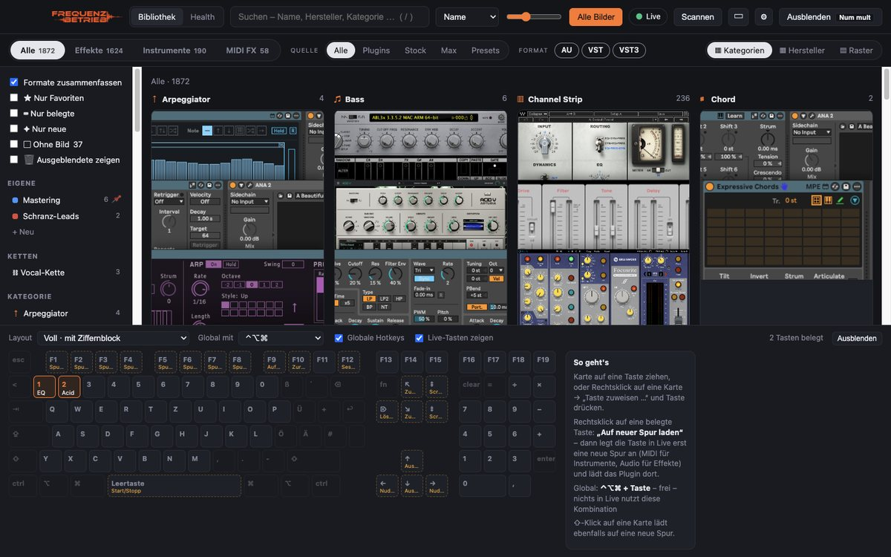
Bilder für alle Plugins
Ein Klick auf Alle Bilder erledigt alles in zwei Schritten:
- Im Hintergrund: AU- und VST3-Plugins werden unsichtbar geöffnet und fotografiert.
- In Live: Alles andere – VST2, Stock- und Max-Devices – wird nacheinander in Live geladen, fotografiert und wieder entfernt.
Während es läuft, wird der Knopf zu Stopp und zeigt den Fortschritt. Bereits vorhandene Bilder bleiben erhalten; es werden nur fehlende aufgenommen.
Links unter den Filtern zeigt ▢ Ohne Bild, wie viele Bilder noch fehlen – ein Haken zeigt genau diese Plugins. Einzelne Plugins fotografierst du per Rechtsklick → Aufnehmen, oder du wählst mit Eigenes Bild wählen … ein beliebiges Bild.
Laden in Live
- Klick auf eine Kachel lädt das Plugin auf die ausgewählte Spur in Live.
- ⇧-Klick legt vorher eine neue Spur an – MIDI für Instrumente, Audio für Effekte.
- Oder: Rechtsklick → In Live laden / Auf neuer Spur laden, eine Taste, das Stream Deck oder das Handy.
Live-Skript einrichten
Mit dem Live-Skript spricht der Organizer direkt mit Lives Browser: Laden dauert Sekundenbruchteile und trifft immer genau das richtige Gerät. Der Organizer legt das Skript selbst in deine User Library – du musst es in Live nur einmal aktivieren:
- Set speichern, Live neu starten.
- In Live die Einstellungen öffnen (⌘ ,, Windows Strg ,) → Reiter „Link, Tempo & MIDI“.
- In einer freien Zeile unter Control Surface „Frequenzbetrieb“ wählen. Input und Output bleiben auf „None“.
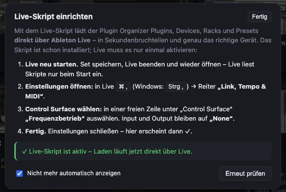
Den Stand siehst du jederzeit unter ⚙ Einstellungen → Live-Skript. Ohne Skript lädt der Organizer über Lives Suche – das klappt auch, ist aber langsamer.
Ordnen & Finden
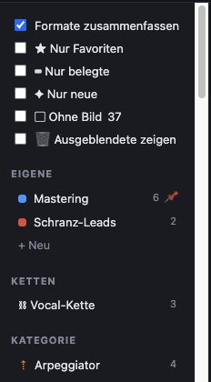
Links findest du:
- Filter: Formate zusammenfassen (AU/VST/VST3 eines Plugins = eine Kachel), Nur Favoriten, Nur belegte (mit Taste), Nur neue, Ohne Bild, Ausgeblendete zeigen.
- Eigene: deine Sammlungen.
- Ketten: deine Ketten.
- Kategorie mit Unterkategorien (z. B. Dynamics › Compressor) und Hersteller.
Neu installierte Plugins erkennt der Organizer automatisch und markiert sie 14 Tage lang mit NEU.
Rechtsklick-Menü
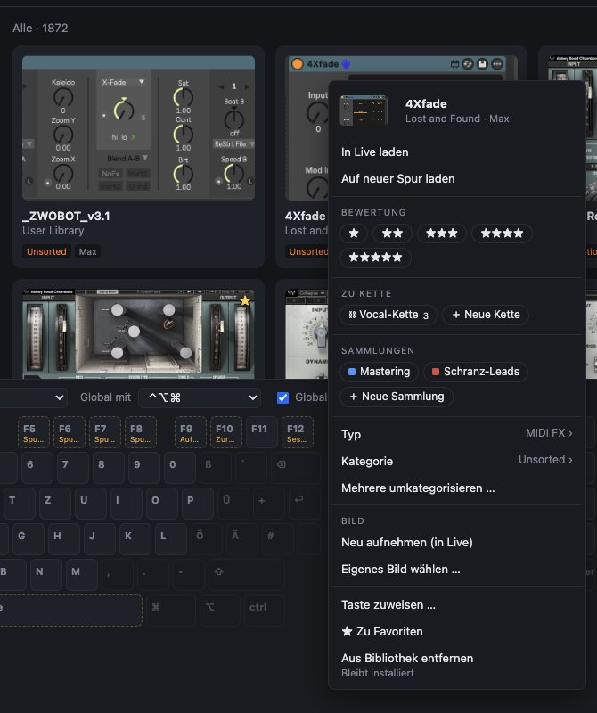
Ein Rechtsklick auf eine Kachel bietet alles, was du mit einem Plugin machen kannst:
- Laden – auf die ausgewählte oder eine neue Spur
- Bewertung (1–5 Sterne), Zu Kette, Sammlungen
- Typ und Kategorie ändern, wenn die Automatik danebenliegt
- Bild: neu aufnehmen oder eigenes Bild wählen
- Taste zuweisen, Favorit, Aus Bibliothek entfernen (bleibt installiert, nur ausgeblendet)
Mehrere auf einmal: mit ⌘-Klick (Windows Strg-Klick) auswählen, dann Rechtsklick.
Sammlungen & Favoriten
Sammlungen sind deine eigenen Ordner, z. B. „Mastering“ oder „Schranz-Leads“. Unter Eigene auf + Neu klicken, dann Kacheln auf die Sammlung ziehen – oder per Rechtsklick → Sammlungen. Ein Plugin kann in mehreren Sammlungen sein. Rechtsklick auf eine Sammlung: umbenennen, Farbe, anheften, löschen. Favoriten markierst du per Rechtsklick → ★ Zu Favoriten.
Bewertung
Per Rechtsklick → Bewertung vergibst du 1 bis 5 Sterne; sie erscheinen auf der Kachel neben dem Hersteller. Oben im Sortiermenü stellt Bewertung deine Lieblinge nach vorne.
Ketten
Eine Kette sind mehrere Plugins, die nacheinander auf eine Spur geladen werden – zum Beispiel EQ → Kompressor → De-Esser → Hall für Vocals.
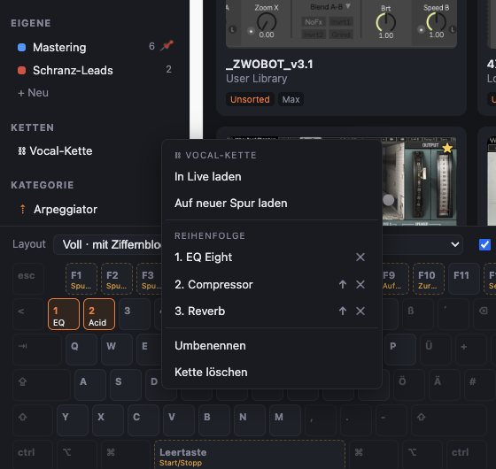
- Anlegen: Plugins in der gewünschten Reihenfolge mit ⌘-Klick auswählen → Rechtsklick → Zu Kette → ＋ Neue Kette → Namen eingeben.
- Erweitern: Rechtsklick auf ein Plugin → Zu Kette → Kette wählen, oder die Kachel auf die Kette ziehen.
- Laden: Klick auf die Kette links; ⇧-Klick lädt sie auf eine neue Spur.
- Bearbeiten: Rechtsklick auf die Kette – mit ↑ nach oben schieben, mit ✕ entfernen.
Plugins auf Tasten
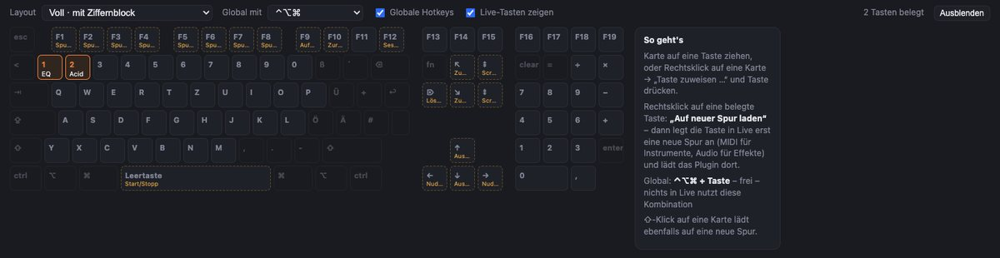
- Belegen: eine Kachel auf eine Taste ziehen – oder Rechtsklick → Taste zuweisen … und die Taste drücken.
- Benutzen: In Live Zusatztaste + Taste drücken (Standard ⌃⌥⌘ – das nutzt Live selbst nicht). Unter „Global mit“ wählst du eine andere Kombination oder „ohne (nur in Live)“: dann reicht die Taste allein, solange Live vorne ist (nur Mac).
- Auf neuer Spur: Rechtsklick auf eine belegte Taste → „Auf neuer Spur laden“.
- Tasten, die Live selbst benutzt, sind beschriftet („Live-Tasten zeigen“), damit du nichts Wichtiges überschreibst. Das Layout (mit/ohne Ziffernblock, MacBook, kompakt) wählst du oben links.
Vollbild, Sidecar, Mini
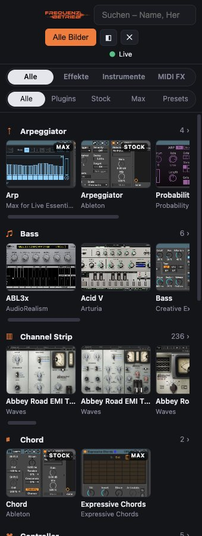
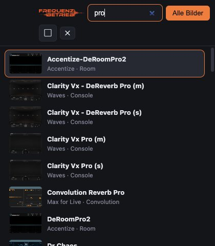
Über ▣ in der Werkzeugleiste:
- Vollbild – alles mit Filtern und Tastatur.
- Sidecar – eine schmale Leiste neben Live, Kategorien als Bildstreifen.
- Mini – ein kleines Suchfenster: tippen, ↑/↓, Enter lädt, ⇧Enter auf neuer Spur.
In den Einstellungen: Immer im Vordergrund und Nach dem Laden ausblenden.
Racks & Presets
Unter Quelle → Presets findest du Instrument-, Drum-, Effekt- und MIDI-Racks (.adg) und Device-Presets (.adv) aus deiner User Library, allen Packs und Lives Core Library – sortiert nach Rack-Art bzw. Device. Damit die vielen Presets deine Plugins nicht zuschütten, erscheinen sie nur in diesem Reiter. Presets zeigen das Bild ihres Devices; geladen wird wie bei Plugins.
Stream Deck
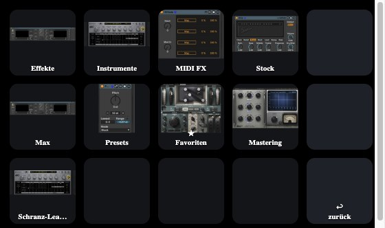
- Unter ⚙ Einstellungen → Stream Deck das Plugin herunterladen und per Doppelklick installieren.
- In der Elgato-Software die Aktion „Plugin laden“ (Kategorie Frequenzbetrieb) auf eine Taste ziehen und rechts ein Plugin auswählen – die Taste zeigt sein Bild.
- Oder die Aktion „Browser öffnen“: Ein Druck öffnet einen Browser auf dem Deck – 12 Tasten mit Bild, rechts ◀ ▶ zum Blättern und ↩ zurück.
Kurz drücken lädt auf die ausgewählte Spur, lang drücken (½ s) auf eine neue. Der Organizer muss dafür laufen.
Handy & Tablet
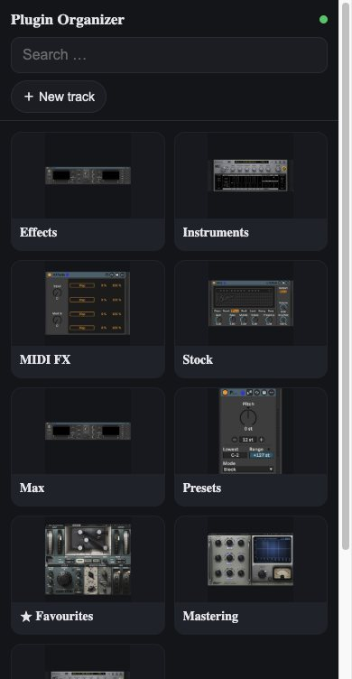
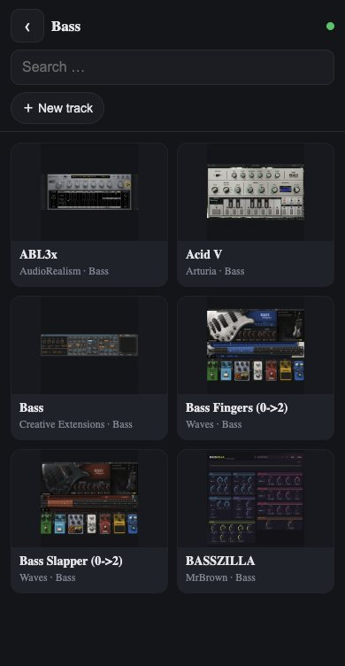
- ⚙ Einstellungen → Fernbedienung (Handy & Tablet) einschalten.
- macOS fragt einmal nach eingehenden Verbindungen → Erlauben.
- Den QR-Code mit der Kamera scannen – der Plugin-Browser öffnet sich im Browser.
Antippen lädt in Live; der Schalter ＋ Neue Spur legt vorher eine neue Spur an. Es braucht keine App, nur dasselbe WLAN. Tipp für iPhone/iPad: in Safari „Teilen → Zum Home-Bildschirm“.
Zugriff gibt es nur mit dem geheimen Schlüssel aus dem QR-Code. Neuen Code erzeugen macht alte Links ungültig.
Library Health
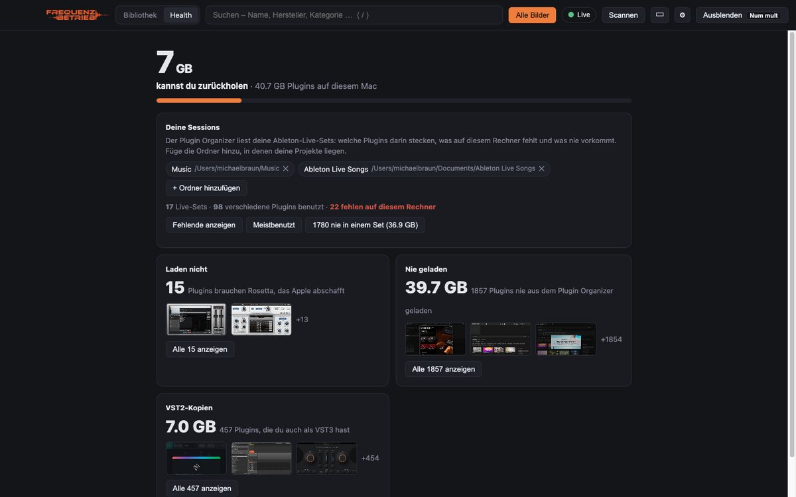
Der Health-Bereich zeigt, wie viel Platz deine Plugins belegen und was du zurückholen kannst: Plugins, die nur mit Rosetta laufen, VST2-Kopien von Plugins, die du als VST3 hast, nie geladene Plugins. Füge unter Deine Sessions die Ordner mit deinen Live-Projekten hinzu – dann siehst du, welche Plugins in deinen Sets fehlen, welche du am meisten nutzt und welche in keinem Set vorkommen.
Einstellungen
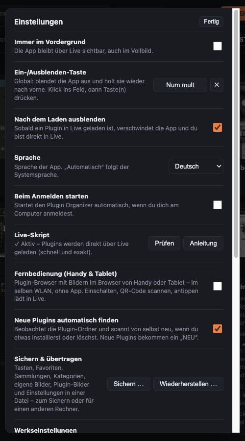
- Immer im Vordergrund, Ein-/Ausblenden-Taste, Nach dem Laden ausblenden
- Sprache: Automatisch, Deutsch oder English
- Beim Anmelden starten
- Live-Skript: Status, Anleitung, Installieren
- Fernbedienung mit QR-Code
- Neue Plugins automatisch finden
- Sichern & übertragen, Werkseinstellungen
- Automatisch nach Updates suchen, Version, Stream Deck, Links
Sichern & Zurücksetzen
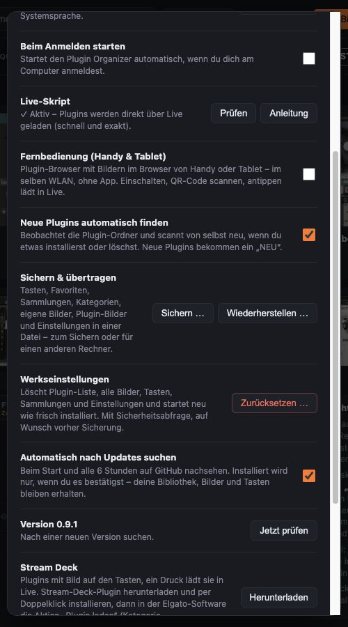
- Sichern … schreibt Tasten, Favoriten, Sammlungen, Ketten, Bewertungen, Kategorien, eigene Bilder, alle Plugin-Bilder und Einstellungen in eine Datei (.pobackup).
- Wiederherstellen … spielt sie zurück – auch auf einem anderen Rechner.
- Zurücksetzen … löscht Plugin-Liste, Bilder und Einstellungen und startet wie frisch installiert. Vorher fragt der Organizer nach und bietet eine Sicherung an. Deine Plugins und Live bleiben unberührt.
Windows
Die Windows-Version ist eine Beta. Der Installer warnt über SmartScreen: „Weitere Informationen“ → „Trotzdem ausführen“. Unterschiede zum Mac:
| Funktion | Windows |
|---|---|
| Bilder | VST3 automatisch; VST2, Stock und Max nur per eigenem Bild (keine Aufnahme in Live) |
| Laden | mit Live-Skript wie auf dem Mac; ohne Skript nur erster Suchtreffer – Skript daher unbedingt aktivieren |
| Tasten nur in Live | nicht verfügbar – globale Tastenkombination nutzen |
| Health | ohne Rosetta-Prüfung |
| Alles andere | wie auf dem Mac |
Fragen & Probleme
Ein Plugin wird nicht oder falsch geladen
Live-Skript aktivieren (siehe oben). Prüfe, ob das Plugin in Lives Browser unter „Plug-Ins“ auftaucht – deaktivierte Plugins kann der Organizer nicht laden.
Ein Plugin bekommt kein Bild
Sehr alte 32-Bit- oder reine Intel-Plugins öffnet Live auf Apple Silicon nicht. Gib ihnen per Rechtsklick ein eigenes Bild oder blende sie aus. Beim Fotografieren in Live muss Live vorne bleiben.
Das Live-Skript zeigt „Live neu starten“
Nach einem Update bringt der Organizer manchmal eine neue Fassung des Skripts mit. Live lädt sie erst nach einem Neustart.
Die Tasten funktionieren nicht
Unter Systemeinstellungen → Datenschutz & Sicherheit → Bedienungshilfen muss der Plugin Organizer erlaubt sein. Prüfe außerdem, ob „Globale Hotkeys“ unter der Tastatur eingeschaltet ist.
Wo melde ich Fehler?
Auf GitHub oder über ⚙ Einstellungen → Fehler melden. Danke!
Frequenzbetrieb Plugin Organizer · frei nutzbar unter der AGPL-3.0 · www.frequenzbetrieb.de · Spenden
Ableton und Ableton Live sind Marken der Ableton AG; VST ist eine Marke der Steinberg Media Technologies GmbH.